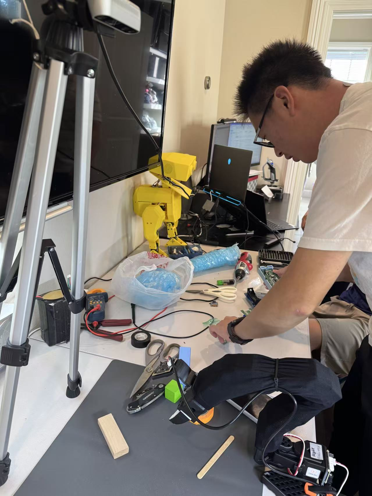
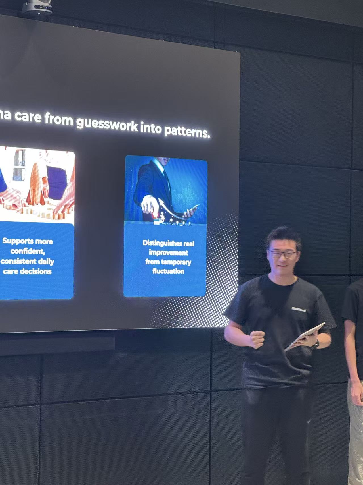
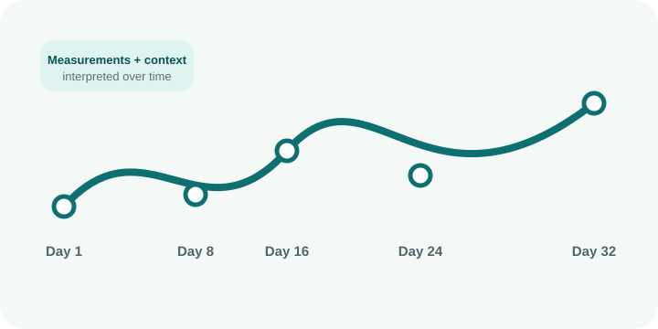

Integrated prototype
Portable sensing hardware, environmental context, image AI, Android workflow, and SCI-based trend records.
SKINGUARD · A STUDENT ENGINEERING PROJECT
SkinGuard records skin measurements, images, and environmental conditions over time. I started the project and lead its hardware and systems work. This section explains what we built, what we tested, and what still needs work.
Our three-step path: first, an integrated monitoring prototype; next, tested personalization and guidance; and finally, more repeatable, reliable, and product-ready hardware.
Phase 1 is complete: an integrated sensing, image-AI, Android, and Skin Condition Index prototype with preliminary technical and longitudinal feasibility testing.


BEHIND THE BUILD
A few photos from work on the prototype and a presentation of the project.



ENGINEERING LEARNING
Early measurements were collected under inconsistent conditions. Some readings could not be compared, and more data did not automatically mean better evidence. The project shifted toward controlled workflows, context fields, quality checks, calibration, and repeatability.
Follow the redesignPortable sensing hardware, environmental context, image AI, Android workflow, and SCI-based trend records.
7 calibration states · 102 sessions · 3 users · 47 participant-days · 510 readings.
No clinical equivalence, treatment, causality, flare prediction, or health-outcome claim.
Expanded longitudinal user data → personalization tests → weather forecast-informed context.
PROJECT ROADMAP
Each phase shows what we have built and what still needs testing. Planned functions are clearly labeled instead of being presented as current results.
2025–2026
Boundary: preliminary engineering prototype; not clinically validated.
H1 2027
Boundary: forecast-informed, non-diagnostic self-care support; no flare prediction.
H2 2027 and beyond
Boundary: toward product readiness—not a guaranteed launch or medical clearance.
WHY LONGITUDINAL?
Skin condition varies with time, environment, routines, measurement conditions, and individual history. SkinGuard explores whether repeated, structured records can make those changes easier to interpret—without claiming diagnosis.
See the problem definition →
TRANSPARENT CONTRIBUTIONS
Project Team documents who led each workstream across problem definition, product direction, hardware, software, AI development, testing, user research, writing, and community activities.